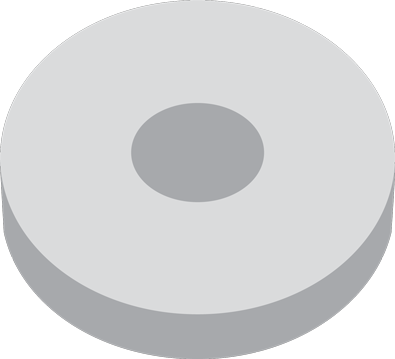

MAGNETISM
MAGNETISM is an invisible force caused by unique qualities of certain materials. The molecules in a magnet make all their electrons move in one direction; normally, electrons move in all directions.
MAGNETIC FIELDS
MAGNETIC FIELDS are created when electrons flow from the North Pole to the South Pole. If you have two magnets and try to connect the south poles, it won't work. The same goes for connecting the north poles; only the north and south are attracted to each other.
MAGNETS are most commonly made of IRON and STEEL.
Some examples include:
